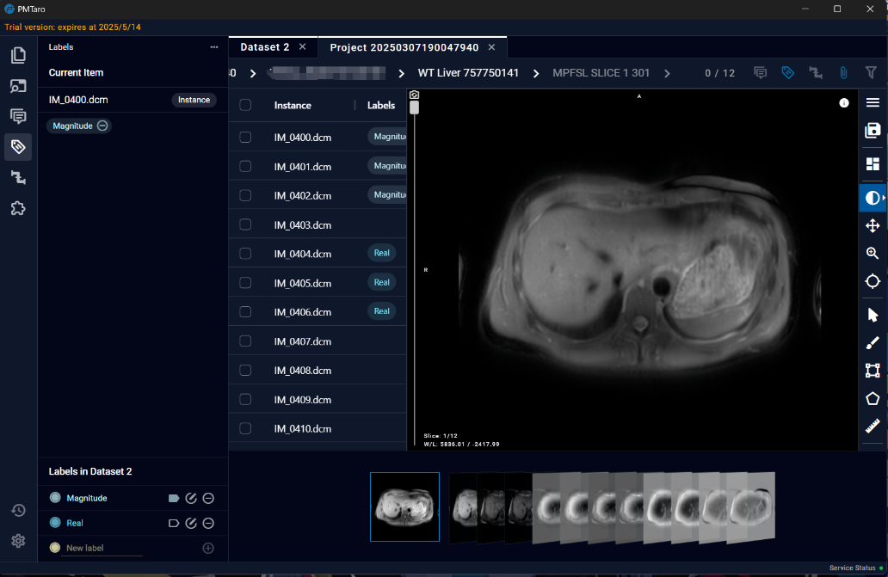
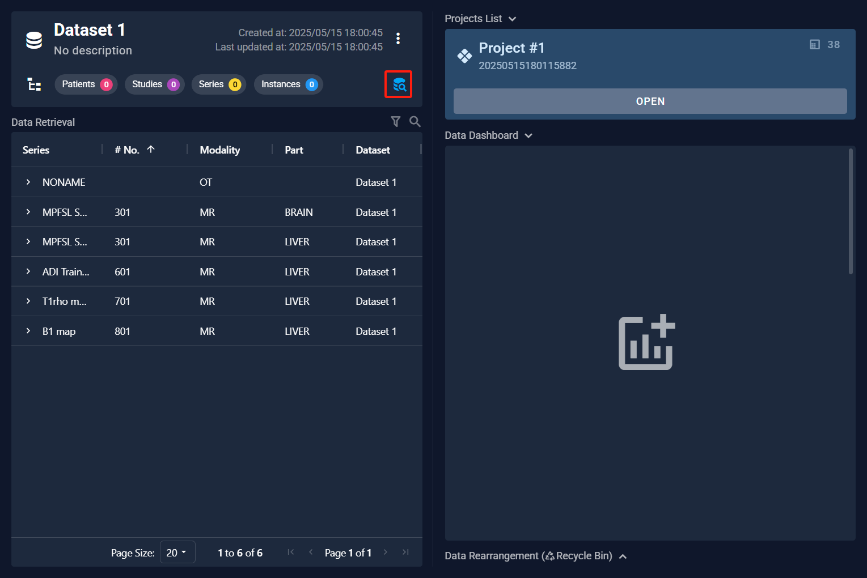
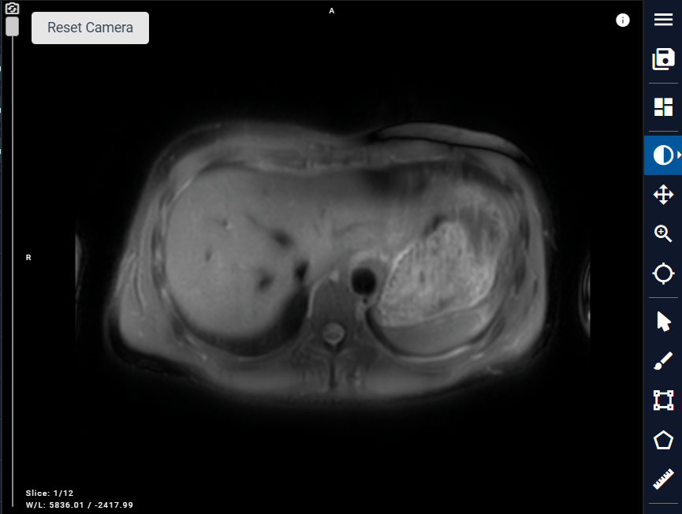

9.1 Node
9.1.1 Varieties of Nodes
The node system currently provides the following categories: Input, Plugins, Converters, Preview, and Output.
- Input Node: This serves as the entry point for loading data that requires processing. Each pipeline must have exactly one Input Node - no more, no less.
- Plugin Nodes: These are algorithmic nodes that execute either pre-configured or user-defined Python code to perform computational operations on the data.
- Converter Nodes: These nodes handle data format conversions and transformations.
- Preview Nodes: These invoke preview interface, allowing users to visualize both the raw data and intermediate data generated during the processing pipeline.
- Output Node: This node determines whether and in what format the results should be saved to file.

9.1.2 Add Node
Right-click on any blank area of the workspace to access the main menu operations. Select the desired option to add it to workflow.

9.2.2 Node Setting
Right-click on a node in the workspace to access node-specific menu operations for the currently selected node. The Toolbar functions from left to right are: Reset Color, Pin, Delete, and Update Definition.The options panel on the right provides specific controls corresponding to each selected item's properties and settings.

9.2.1 Node status description
The workflow consists of multiple nodes, each of which exhibits distinct visual states during editing and execution phases.
- During Editing: Nodes can display three states:
- Unselected nodes appear without borders
- Selected nodes are highlighted with a white border, and their associated input/output links are also displayed in white
-

-
Nodes with initialization errors are marked with a red border, indicating the need for definition correction
-
During Execution: Nodes transition through four distinct states:
- Current: Indicated by a blue border, representing the node currently being processed
- Pending: Marked with a yellow border, signifying nodes awaiting processing
- Done: Displayed with a green border, denoting successfully completed nodes
-

- Error: Highlighted with a red border, indicating nodes that encountered processing exceptions 
The visual state system employs consistent color coding to provide immediate feedback on node status, facilitating efficient workflow monitoring and management.